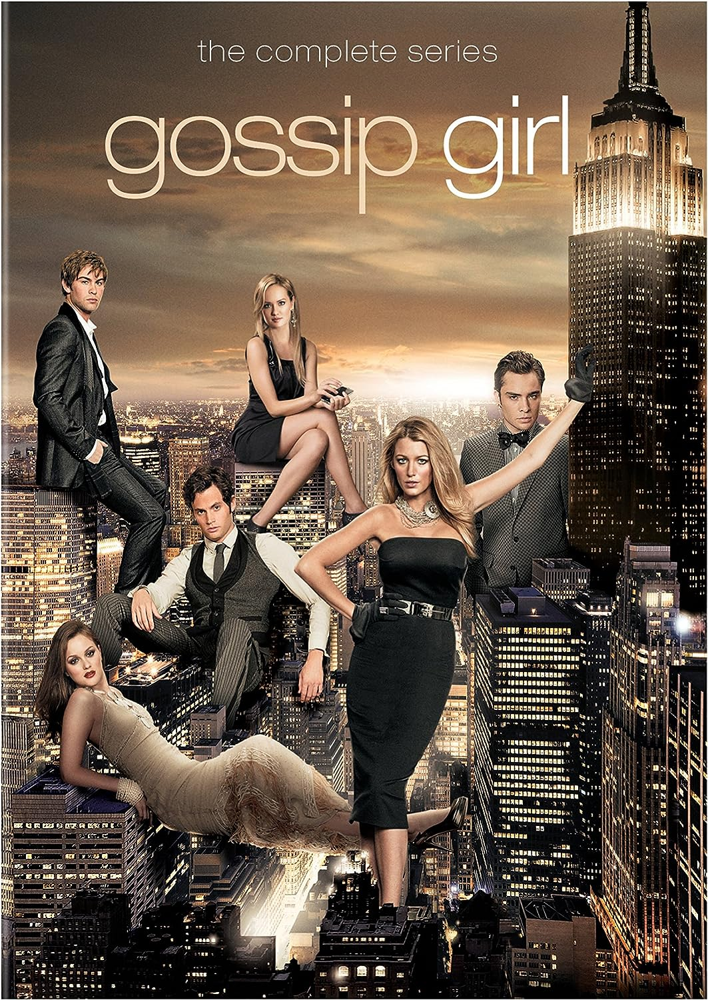

Gossip Girl
Calificacion: 7.5/10 | 2007 | Romance-Drama |

Narra las extravagantes vidas de un grupo de chicos de la alta sociedad de Nueva York que asisten al mismo instituto en el Upper East Side y su vida gira en torno a las clases, las fiestas más salvajes, la ropa y el sexo. Están inmersos en un círculo vicioso de rumores, mentiras y secretos alimentado por el blog más popular del colegio: Gossip Girl.